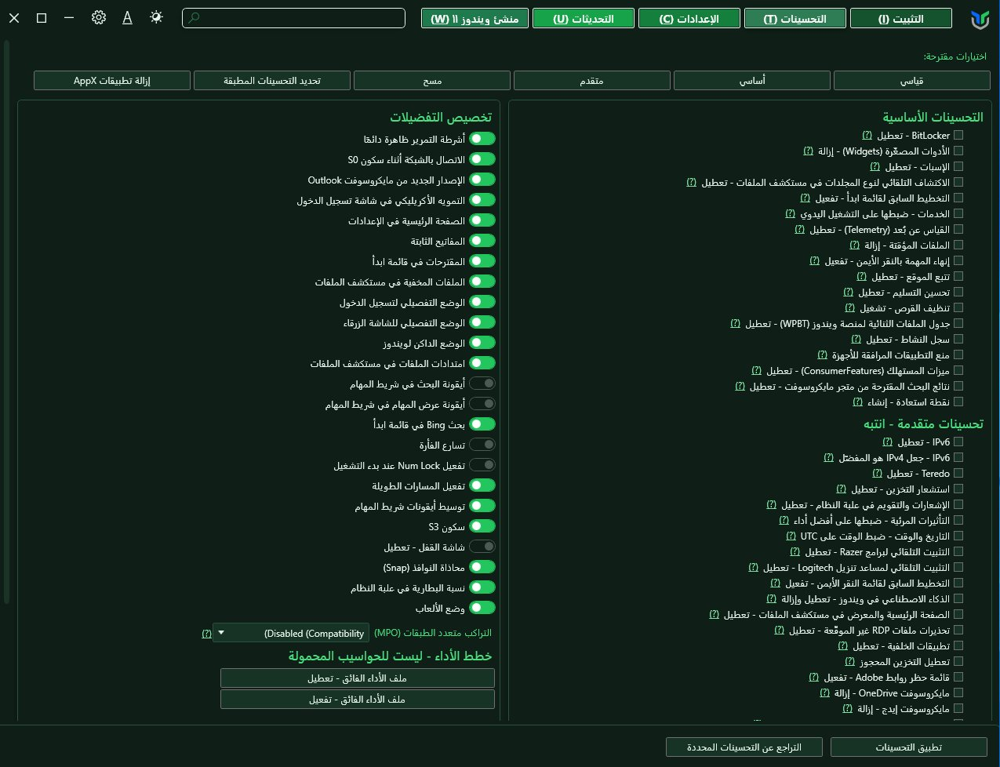
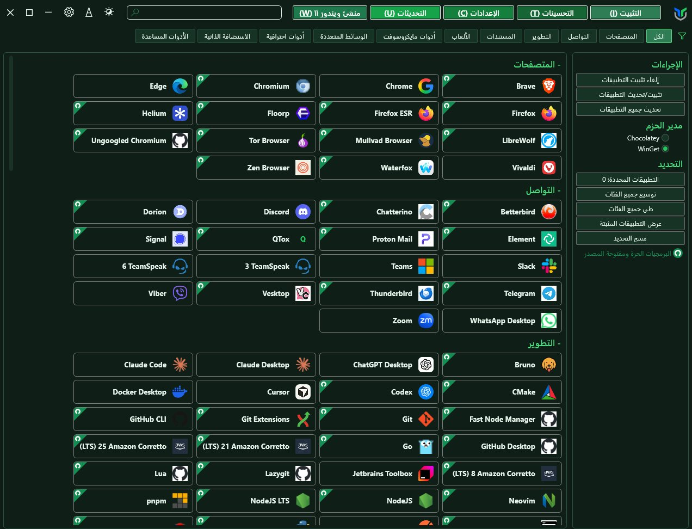
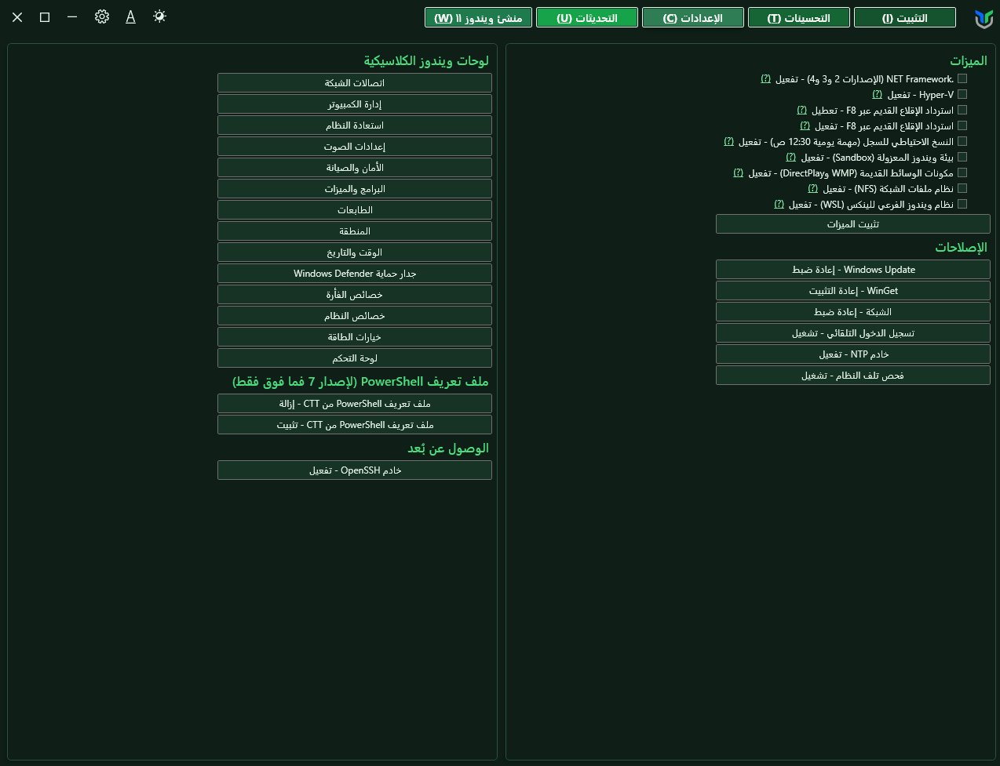
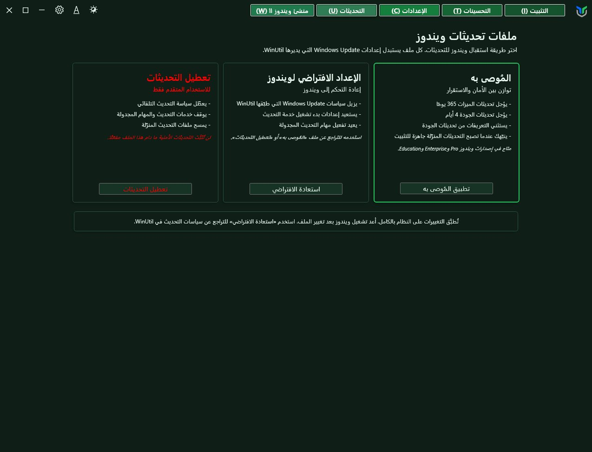
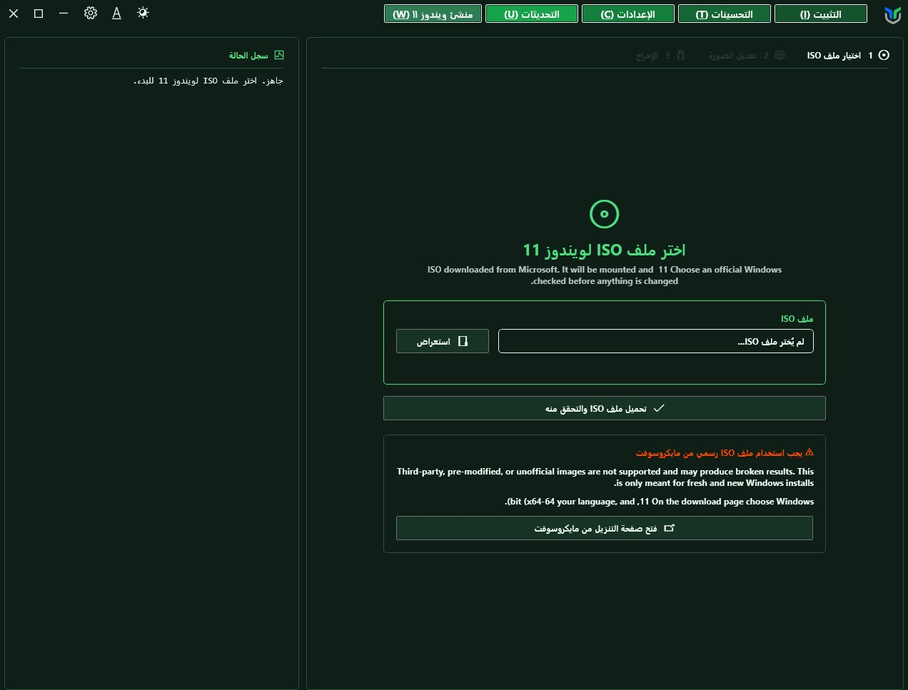

جهاز أسرع
أوقف الخدمات غير الضرورية وملفات التتبع، فيتفرغ المعالج والذاكرة لما تستخدمه فعلًا.
ثبّت برامجك دفعة واحدة، وأوقف ما يبطئ جهازك، وتحكّم في التحديثات، من نافذة عربية واحدة، مجانًا وبلا تثبيت.

بدل البحث عن عشرات البرامج والإعدادات المخفية في ويندوز، جمعنا لك أهمها في مكان واحد وبلغتك.
أوقف الخدمات غير الضرورية وملفات التتبع، فيتفرغ المعالج والذاكرة لما تستخدمه فعلًا.
اختر متصفحك وأدواتك المفضلة، واضغط زرًا واحدًا لتُثبَّت كلها من مصادرها الرسمية.
كل تحسين له زر تراجع، وتستطيع إنشاء نقطة استعادة قبل أي تغيير.
تحديثات الأمان فقط، أو الإعداد الافتراضي، أو إيقاف مؤقت. القرار لك.
جهّز نسخة تثبيت خفيفة من ملف ISO الرسمي، بلا برامج مثبّتة مسبقًا.
كل الأزرار والقوائم والشروحات بالعربية، وبثيم أخضر مريح للعين.
اضغط بالزر الأيمن على قائمة ابدأ، واختر Terminal (Admin).
انسخ الأمر من أعلى الصفحة، والصقه، ثم اضغط Enter.
تفتح الأداة بالعربي. حدد ما تريد واضغط تطبيق.
اضغط على أي تبويب، واضغط على الصورة لتكبيرها.

مكتبة ضخمة من البرامج مرتبة في فئات: المتصفحات، والتواصل، والتطوير، والألعاب.
قلب الأداة: تعديلات مجرّبة تجعل ويندوز أخف وأكثر خصوصية.

اختصارات لميزات ويندوز المخفية وإصلاحاته السريعة.

أنت من يقرر متى يُحدَّث جهازك وكيف.

نسخة تثبيت نظيفة من ملف ISO الرسمي.